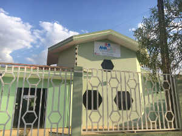

Identificação da Entidade
| CNPJ | 25.353.683/0001-91 |
| Inscrição Municipal | 99.015.618 |
| Endereço | 99.015.618 |
| Presidente | Daniela Lopes da Silva Defante (77) 9 9136-3478 |
| Diretora | Cintia Silva (77) 9 9993-3478 |
Histórico

A ideia da criação da Associação de Amigos do Autista de Luís Eduardo Magalhães – BA (AMA-LEM),
surgiu
de
uma mãe – Daiane Gorgen reconhecida como uma guerreira.
Em meados do ano de 2015, Daiane já tinha diagnostico do filho José, há pouco mais de um ano e sabia o quão difícil era dar todos os tratamentos necessários a ele, correndo entre um consultório particular e outro, levando-o a APAE e até para a cidade de Barreiras, município a noventa quilômetros da cidade de Luis Eduardo de Magalhães, pois Terapia Ocupacional com Integração Sensorial só havia lá.
Dessa conversa decidimos fazer o que chamamos de a 1º REUNIÃO PARA CRIAÇÃO DE UMA ASSOCIAÇÃO, que daria suporte as crianças e seus familiares.
Pagamos do nosso bolso a confecção de folders para a divulgação da reunião, que ocorreu no Centro Cultural da cidade no dia 25 de novembro de 2015.
Nessa reunião realizamos o cadastro de todos os presentes, cerca de 90 pessoas, dentre esses, tínhamos alguns pais de criança com o Transtorno do Espectro Autista, que cadastraram seus filhos, profissionais da área da saúde e da educação, pessoas interessadas a fazer parte da Diretoria e em serem voluntários em Eventos a serem proporcionados pela futura Associação.
Apresentamos nossas ideias sobre os objetivos da Associação e deixamos agendado dia três de fevereiro de 2016 para reunião de eleição de Diretoria.
E assim, foi feito. No dia 3 de fevereiro de 2016, conseguimos eleger nossa Diretoria que tem como: Presidenta: Daniela Lopes da Silva Defante
O porquê do nome AMA?
AMA é abreviação de Associação de Amigos do Autista em todo Brasil. A AMA é para o autista, assim como a APAE é para o Excepcional. A Associação Brasileira de Autismo (ABRA) que nos orientou a utilizar esta Razão Social e esse nome de fantasia.
Justificativa
O Transtornos do Espectro Autista (TEA) é uma condição geral para um grupo de desordens complexas do desenvolvimento do cérebro, antes, durante ou logo após o nascimento. Esses distúrbios se caracterizam pela dificuldade na comunicação e interação social e comportamentos repetitivos.
Embora todas as pessoas com TEA partilhem essas dificuldades, o seu estado irá afetá-las com intensidades diferentes. Assim, essas diferenças podem existir desde o nascimento e serem óbvias para todos; ou podem ser mais sutis e tornarem-se mais visíveis ao longo do desenvolvimento.
As crianças com TEA apresentam dificuldades em entender as regras de convívio social, a comunicação não verbal, a intencionalidade do outro e o que os outros esperam dela. Com essas dificuldades funcionais, o impacto na eficiência da comunicação é muito grande, fazendo com que o desenvolvimento do cérebro social se mantenha cada vez mais lento para exercer as funções necessárias para a interação social que é a cada momento mais e mais complexa conforme a faixa etária.
O TEA pode ser associado com deficiência intelectual, dificuldades de coordenação motora e de atenção e, às vezes, as pessoas com autismo têm problemas de saúde física, tais como sono e distúrbios gastrointestinais e podem apresentar outras condições como síndrome de déficit de atenção e hiperatividade, dislexia ou dispraxia.
Na adolescência podem desenvolver ansiedade e depressão. O retardo mental está associado em 70% dos casos e crises epilépticas em 30%. Existe maior incidência no sexo masculino.
A etiologia desta síndrome é multifatorial, envolvendo fatores genéticos, ambientais, imunológicos, comportamentais, alimentares e virais.
O comportamento é exteriorizado através da pobreza de contato visual e interação emocional com outras pessoas, prejuízo na fala, estereotipias, obsessões por rotinas e fascinação por determinados objetos.
Nota-se na criança com a síndrome, alterações na afetividade, ausência de interesse no ato de brincar, dificuldade na fala dando a impressão de ser uma criança tímida ou arrogante, pois o comportamento desta criança além de interferir no seu desenvolvimento a prejudica ainda mais no meio social a qual ela está inserida.
Crianças trabalhadas terapeuticamente em tenra idade tendem a tornarem-se adultos independentes, e com grau maior de comprometimento, com ajuda terapêutica de equipe multidisciplinar de profissionais especialistas na área atingem progresso considerável com algum grau de independência. Porém de 65% a 70% continuam com déficits muito significativos e requerem um nível elevado de cuidados.
Além da dificuldade que a criança já carrega consigo por conta do transtorno, é na fase escolar que as complicações ficam visíveis, pois será nela que será exigida do aluno, atenção, compreensão, entrosamento, desenvolvimento, socialização, situações que para uma criança com TEA torna-se algo completamente dificultoso, causando em determinados casos, ainda mais isolamento deste, se o profissional que trabalhar com esta criança não estiver apto para educar uma criança com TEA.
Porém atualmente, existem diversos recursos, escolas e profissionais especializados para se trabalhar com a síndrome, são por meio dessas pessoas que a criança será estimulada todos os dias, proporcionando seu aprendizado e desenvolvimento, com educadores especializados e escolas específicas a criança tem possibilidade de aprender e até mesmo se relacionar, de acordo com cada caso.
O prognóstico do TEA é variável e, provavelmente depende da severidade das etiologias subjacentes, nível das habilidades da pessoa com TEA e especialmente de proporcionar a estimulação precoce através das terapias multiprofissionais.
Objetivos
Objetivos em Curto e Médio Prazo:- Proporcionar atendimentos multiprofissionais;
- Estrutura física e profissionais qualificados para atender de 70 a 100 crianças;
- Apoio profissional para pais e responsáveis;
- Proporcionar cursos e palestras sobre autismo;
- Inclusão escolar.
- Clínica Escola – no contra turno da escola regular a criança frequentará Associação, recebendo toda estimulação necessária;
- Programa de Estagiários de Psicologia, Pedagogia e Psicopedagogia;
- Sede própria para atender até 200 crianças;
- Equoterapia, musicoterapia, fisioterapia, capoterapia e natação.